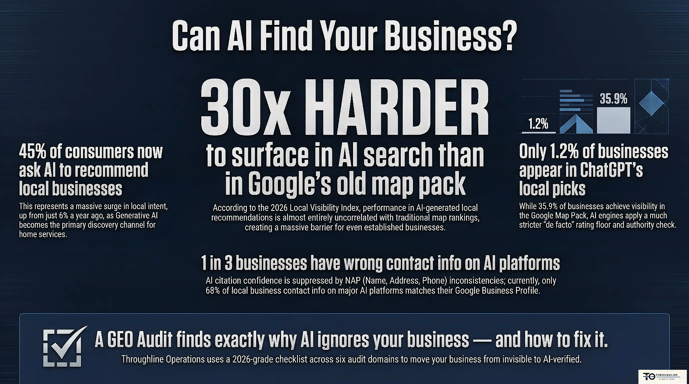

Operational Intelligence · Hamilton & GTA
Find the throughline in your operation.
It augments your team. It never replaces them.
We find the work that repeats — day after day — and build operational intelligence around it, so it runs without you babysitting it.
Built on 15 years of film logistics · Response same business day · CAD
Watch a workday find its throughline.
This scripted console shows how repeat work becomes visible, reviewable, and easier to hand off while people keep approvals, relationships, and judgment.
The work that repeats is quietly costing you. Chasing invoices, re-typing the same quote, copying job details from email to calendar to spreadsheet — that's not a you problem. It's a repeats problem.
Hours that vanish
The same manual steps, every day, across every job. Individually small. Collectively, a part-time salary in lost time.
Leaks you can't see
Missed calls, double-bookings, invoices that age out. The revenue doesn't show up as a line item — it just never arrives.
It all lives in your head
The process works because you hold it together. That's not a system — that's a single point of failure with a phone.
We run AI teammates on our own calls.
We don't just talk about operational intelligence — we operate on it. Live AI teammates sit in on our discovery calls, taking notes, surfacing context, and prepping the follow-up in real time.
When we build for you, you're getting a system we trust enough to run our own business on. It augments the team; it never replaces them.
The Ops Blueprint
Not sure which service you need? Start with a paid look, not a guess. In a focused 45-minute call, an operator maps your business and tells you exactly what to fix first — then hands you the plan in writing.
Book the Blueprint →- 45-minute operations mapping call
- 1-page SOP for your core workflow
- Prioritized SaaS / AI tool-stack recommendation
- 90-day roadmap, delivered in 5–7 days
Five ways we build your throughline
From a fixed-scope sprint to a full private intelligence stack — start where it hurts most.
Business Automation Buildouts
You know the pile of work that eats your evenings. In three weeks we find the work that repeats, build a system that does it automatically, and hand you back your hours — fixed price, fixed scope, no surprise bill.
What you get: a working automation built and tested in your real tools, with a plain-English handbook and a walkthrough so your team runs it without us.
Website and AI Visibility Refresh
45% of customers now ask AI to recommend a local business — and almost nobody shows up. We test exactly what AI says about you across every major platform, find why you're missing, and hand you the fix list, ranked.
What you get: the full audit scored across six domains with a prioritized action plan. Retainers keep you visible month after month.
AI Deployment
Your own private operational intelligence — set up where YOU want it. On a machine in your office, in the cloud, or both. Because it can run entirely on hardware inside your building, your customer data never has to leave the premises.
What you get: a working private system scoped to your operation — on-premises, cloud, hybrid, or full hardware install.
AI Agent Builds
You don't need new software — you need your existing software to do more of the work. An agent is a tireless digital teammate wired into the tools you already use: it watches the inbox, fills the schedule, preps the invoices, and flags what needs a human.
What you get: a custom agent built into your current stack with guardrails, an approval flow you control, and training for your crew.
Website Builds
Most trades websites are a business card from 2015. Yours should be a worker: findable by Google AND by the AI platforms your customers now ask, fast on a phone in a parking lot, and built to turn a visit into a booked call.
What you get: a fast, modern site engineered for both traditional and AI search from day one, connected to your booking flow.
Your next customer is asking AI, not Google.
Figures reflect 2026 generative-search research · sources available on request.

Find your operational leaks
Four quick questions. We'll estimate how much repeating, manual work is costing you per year.
Recommended starting point
Based on your answers, here's where we'd start.
What this is — and what it isn't
No fabricated testimonials. No client logos we don't have. Just a clear line on how we work.
What this is
- Operational intelligence built around the work that actually repeats in your business.
- Fixed-scope sprints with a defined start, finish, and deliverable.
- Systems we architect and deploy with you — documented so your team owns them.
- Built by a 15-year DGC Location Manager who ran real logistics under real deadlines.
What this is not
- Not "AI replaces your staff." It augments your team; it never replaces them.
- Not an agency that hands you a dashboard and disappears.
- Not an open-ended retainer designed to bill forever.
- Not hype. If a problem doesn't need automation, we'll tell you.
Let's find your throughline.
15 minutes. No pitch. We find the work that should run itself, and you decide if you want it built.
Book a Free Discovery Call →Response same business day · Hamilton & GTA · All prices in CAD